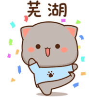
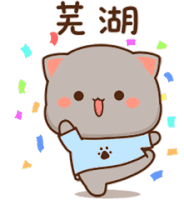

Klik Suratnya!
Hhmm Gimana yaa.. Aku Sih Ga Suka Jamu 🤭 Soalnya, Sukanya Sama Kamu 😆❤️ Chuuaakss~ Gimana, Boleh? 🤭❤️ Yeaayy!!!🎉 Balas pesan ke WhatsApp aku yaa🤣❤️
Hhmm Gimana yaa..
Aku Sih Ga Suka Jamu 🤭
Soalnya,
Sukanya Sama Kamu 😆❤️
Chuuaakss~
Gimana, Boleh? 🤭❤️
Yeaayy!!!🎉
Balas pesan ke WhatsApp aku yaa🤣❤️
Yaahh🥺 yaudah deh:(


 
